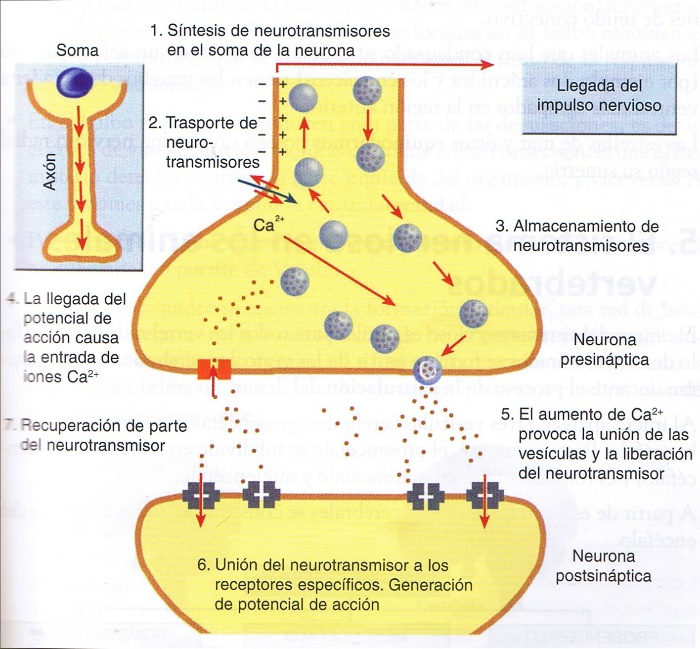
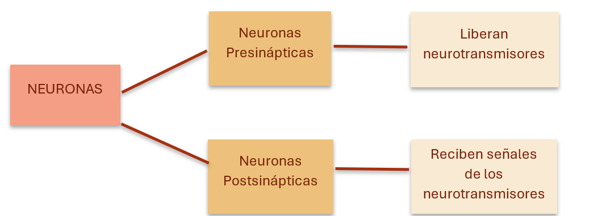

En un sistema de comunicación existe una fuente de origen que se encarga de transmitir información a través de un canal y que, luego de ser entregada al destinatario; éste se encarga de interpretar el mensaje y preparar una respuesta a dicha información.
Bueno, pues el sistema nervioso funciona de manera similar. La fuente de origen serían las terminaciones nerviosas periféricas, las cuales se encuentran en el Sistema Nervioso Periférico. Estas se encargan de la transmisión de señales nerviosas entre el sistema nervioso central y los órganos y tejidos del cuerpo. La transmisión convierte la información original en una nueva forma para ser enviada de manera similar, esto sería la Sinapsis. La neurona sensitiva motora funciona como el canal por el cual se transmite la información. Finalmente tenemos al destinatario, que serían los músculos y glándulas, encargados de interpretar la información y dar una respuesta adecuada a ésta.
Este blog de divulgación científica busca enseñar la complejidad que tiene nuestro sistema nervioso y enfatizar la importancia que tiene éste en nuestro cuerpo, pues gracias a este sistema, podemos hacer ciertos movimientos, como mover un brazo, poder percibir sensaciones y sentir el calor del fuego.
El propósito de explicar este tema es proporcionar información clara y detallada sobre el funcionamiento del sistema nervioso, ampliando el conocimiento, pero sin ser agobiante y tedioso al momento de aprender, sobre todo a estudiantes interesados en la psicología, neurología o medicina.
Más Allá de los Nervios: Introducción Profunda a su Estructura y Función

El sistema nervioso se caracteriza por una estructura compleja que desarrolla múltiples funciones. Es un conjunto de órganos y estructuras del cuerpo humano, constituido por neuronas, que son capaces de transmitir impulsos eléctricos a lo largo de una gran red de terminaciones nerviosas.
El sistema nervioso se maneja por tres tipos de neuronas. Las neuronas sensoriales mandan información desde los tejidos del cuerpo hacia la medula espinal, esto lleva a sentir determinados estímulos tanto en el interior (un malestar gástrico), como en el exterior (una gota de lluvia que cae sobre la mano). Cuando el cerebro manda esa información, involucra la segunda clase de neurona, las interneuronas encargadas de analizar, interpretar la información y decidir cómo responder; así se forma una comunicación interna. Como resultado de ese procesamiento, el sistema nervioso central manda instrucciones hacia los tejidos del cuerpo por medio del tercer tipo de neuronas, las motoneuronas, que responde con contracciones musculares o secreciones glandulares.
Estos tres tipos de neuronas nos indican cuales son las funciones del sistema nervioso, el cual se puede entender en tres términos: 1.- un estado de alerta que recoge información 2.- el procesamiento de esa información y 3.- la activación del cuerpo para responder adecuadamente.
De acuerdo con su anatomía, el sistema nervioso tiene dos principales divisiones, que son el Sistema Nervioso Central (SNC) y el Sistema Nervioso Periférico (SNP).
El SNC es aquella parte del sistema nervioso que se encuentra dentro de las cavidades óseas, se caracteriza por ser la estructura más protegida del organismo. Está formado por el encéfalo y la medula espinal. En él se integra la información sensitiva, se generan los pensamientos y emociones, también se forma y almacena la memoria. Está conectado con los receptores sensitivos, los músculos y las glándulas de las zonas periféricas del organismo a través del SNP.
El SNP está formado por los nervios craneales, que nacen en el encéfalo y los nervios raquídeos, que nacen en la medula espinal. Este sistema, a su vez, puede subdividirse en Sistema Nervioso Somático (SNS) o Sistema Nervioso Autónomo (SNA). El SNS está formado por neuronas sensitivas que llevan información desde los receptores cutáneos, la superficie corporal y las extremidades hasta el SNC que conducen impulsos sólo al sistema muscular esquelético. Es una función voluntaria encargada del control locomotor y la ejecución de posturas. El SNA está formado por neuronas sensitivas que llevan información desde vísceras hasta el sistema nervioso central, conducen los impulsos hasta el musculo liso, el musculo cardiaco y las glándulas. Es involuntario y se encarga de controlar el organismo y recibir información de los órganos. Además, se caracteriza por ser más resistente a ser afectado por patologías.
Neurotransmisores: Mensajeros Químicos del Cerebro
Los neurotransmisores permiten que las neuronas se comuniquen entre sí. Los neurotransmisores que se liberan se unen a los receptores de otra neurona. Existen dos tipos de neuronas importantes en la comunicación neuronal:
La señal puede estimular o inhibir a la célula receptora, dependiendo del neurotransmisor y el receptor involucrados.
A veces, las señales entre las neuronas se producen en la dirección inversa (llamada neurotransmisión retrógrada). En tales casos, las dendritas (ramas receptoras de una neurona) en las neuronas postsinápticas liberan neurotransmisores que afectan a los receptores en las neuronas presinápticas. La transmisión retrógrada puede inhibir la liberación de neurotransmisores adicionales en las neuronas presinápticas y ayudar a controlar el nivel de actividad y la comunicación entre las neuronas.
La interacción del neurotransmisor con el receptor debe interrumpirse pronto para finalizar la acción continua del neurotransmisor y/o para permitir la activación rápida y repetida de los receptores. Los neurotransmisores que han interactuado con los receptores pueden sufrir algunas de las situaciones siguientes:
• Pueden ser bombeados a gran velocidad de nuevo a las terminaciones nerviosas mediante procesos activos dependientes de ATP (recaptación) para su reciclado o su destrucción.
• Pueden ser eliminados por enzimas cerca de los receptores.
• Pueden difundir hacia la zona adyacente y ser eliminados.
Los neurotransmisores captados por las terminaciones nerviosas son reempaquetados en gránulos o vesículas en el axón terminal para proceder a su reutilización.
Otros neurotransmisores gaseosos adicionales incluyen monóxido de carbono (CO) y sulfuro de hidrógeno (H2S). Estos transmisores se producen en las células de todo el cuerpo (incluido el cerebro). El CO endógeno se genera a partir del metabolismo del hemo y puede participar en procesos que implican la generación de fiebre, la inflamación, la supervivencia celular y el control de la dilatación de los vasos sanguíneos. Varias enzimas están involucradas en la producción de H2S, que se cree que es necesaria para que el cerebro forme y retenga recuerdos.
Las sustancias cuyo rol está peor determinado en la neurotransmisión incluyen las siguientes: histamina, vasopresina, péptido intestinal vasoactivo, carnosina, bradicinina, colecistocinina, bombesina, somatostatina, factor liberador de corticotrofina, neurotensina y posiblemente adenosina.
Los endocannabinoides son neurotransmisores endógenos a base de lípidos que modulan la función cerebral, endocrina y del sistema inmunitario.
Transformaciones Mentales: La Capacidad de Cambio del Cerebro
Hasta hace poco se creía que el desarrollo y recuperación del cerebro se detenían en la edad adulta, pero modernas técnicas de neuroimagen cerebral han permitido reconceptualizar la dinámica del sistema nervioso central y su funcionamiento. Las evidencias muestran que el encéfalo puede cambiar para adaptarse a diversas circunstancias, no solo durante la infancia y la adolescencia, sino también durante la edad adulta e incluso en situaciones de lesión cerebral, lo que significa que el cerebro es flexible y modificable.
El término que denota dichos cambios del encéfalo, se denomina plasticidad neuronal (Neuroplasticidad).
La neuroplasticidad es un proceso que representa la capacidad del sistema nervioso de cambiar su reactividad como resultado de activaciones sucesivas. Tal reactividad permite que el tejido nervioso pueda experimentar cambios adaptativos u organizacionales en un estado fisiológico con o sin alteración.
La plasticidad del sistema nervioso central incluye la neuro-génesis, ésta es la formación de neuronas que comprende la proliferación (multiplicación), migración y la división de las células madres en las cuales una o ambas células hijas llegan a ser neuronas; la apoptosis, un proceso de muerte celular programada que se produce cuando una serie de procesos moleculares en la célula conducen a su muerte; los brote dendríticos y axónicos, los cuales son respuesta de crecimiento frente a un estímulo que puede ser o no el primer paso para la formación de nuevas sinapsis. Pueden ser de dos tipos: Brotes terminales o ultraterminales y brotes colaterales.
La potenciación a largo término de la transmisión sináptica, definida como una intensificación duradera en la transmisión de señales entre dos neuronas que resulta de la estimulación sincrónica de ambas, es el mecanismo principal de la formación de la memoria; la depresión a largo término de la transmisión sináptica, entendida como una respuesta a un estímulo más corto en la célula postsináptica, lo que viene acompañado por una trasmisión de señales más débiles y no duraderas; el reclutamiento de la corteza adyacente y el reclutamiento del hemisferio contralateral.
Por lo tanto, podríamos decir que el sistema nervioso posee más de un mecanismo de neuroplasticidad. Entre ellos se encuentran la plasticidad sináptica y la plasticidad de la excitabilidad neuronal intrínseca y las anteriormente mencionadas.
El Cableado Central del Cuerpo: La Importancia de la Médula Espinal
En el sistema nervioso se distinguen dos divisiones. En concreto, el sistema nervioso central comienza en el bulbo raquídeo y termina en la zona lumbar; y la médula espinal es la parte con mayor influencia, está protegida por la columna vertebral así como por las meninges y el líquido cefalorraquídeo. Estas partes permiten que los daños producidos lleguen a afectar a la médula espinal.
La médula espinal es el punto de conexión entre el cerebro y el resto del organismo. Es más, la mayor parte de las fibras nerviosas pasan por la médula espinal. Además, posee tanto neuronas que reciben información de los distintos órganos, como también neuronas encargadas de transmitir la información y órdenes pertinentes a diferentes zonas del cuerpo.
La médula espinal tiene distintas conexiones nerviosas encargadas de enviar los estímulos a las diferentes regiones del cuerpo:
Sustancia Gris: Se refiere a la parte central de la médula espinal y está compuesta por los somas o cuerpos neuronales. Su forma se asemeja a la silueta de una mariposa con las alas desplegadas, con cuatro astas o prolongaciones:
Asta ventral: es una de las prolongaciones de la sustancia gris de la médula espinal que contiene los cuerpos celulares de las neuronas motoras. Estas neuronas transmiten información desde el cerebro o la médula espinal hasta los músculos, estimulando su movimiento.
Asta dorsal: es una de las tres columnas grises de la médula espinal y se encarga de procesar información sensorial
Zona intermedia. De hecho, en esta zona se llevan a cabo las conexiones entre las neuronas sensitivas y las motoras
Sustancia Blanca: es la parte externa de la médula espinal y está formada por axones de neuronas que son las encargadas de conectar la médula y el cerebro. Estas neuronas pueden transmitir estímulos de forma ascendente, es decir, hacia el encéfalo, o de forma contraria, hacia los órganos.
Funciones de la médula espinal
La médula espinal es un actor fundamental del sistema nervioso. No es solo el canal por el cual el cerebro se comunica con el resto del cuerpo, sino que también permite hacer algunas acciones de manera automatizada. En definitiva, las principales funciones son las siguientes:
Hay ciertas enfermedades relacionadas con las lesiones en la médula, y, dependiendo del grado de la lesión, conllevan unos efectos secundarios u otros, según las partes del cuerpo que se hayan visto comprometidas.
Asimismo, hay estudios que confirman que las personas que tienen una lesión crónica en la médula espinal tienen mayor riesgo de padecer un deterioro cognitivo. Las funciones cognitivas que se pueden ver afectadas son: la fluidez verbal y la capacidad de aprendizaje.
Trastornos relacionados con la médula espinal
1.Lesiones medulares:Daño en la médula espinal que afecta movimiento y sensibilidad.
2.Esclerosis múltiple:Ataque autoinmune a la mielina, dificultando la comunicación nerviosa.
3.Poliomielitis:Virus que puede causar parálisis.
4.Síndrome de Brown-Séquard:Parálisis y pérdida sensorial en lados opuestos del cuerpo.
5.Síndrome de Guillain-Barré:Debilidad y parálisis por ataque autoinmune a los nervios.
Investigaciones y avances
Tratamientos: Fármacos y cirugía para reducir daño e inflamación.
Regeneración nerviosa: Uso de células madre y factores de crecimiento para reparar nervios.
Prótesis y estimulación: Dispositivos que restauran funciones motoras y sensoriales.
Plasticidad neural: Estudios sobre la capacidad del cerebro y médula para adaptarse y reorganizarse tras lesiones.
La Magia del Reflejo: Cómo las Neuronas Espejo Crean Empatía
"La Magia del Reflejo" se refiere al fascinante mundo de las neuronas espejo y su papel en la empatía y conexión humana.
Las neuronas espejo fueron descubiertas por un grupo de investigadores de la Universidad de Parma, en Italia, quienes encontraron que ciertas neuronas de una región cerebral de los monos macacos se activaban en el momento en el que observaban a otros monos o personas mover, por ejemplo, un brazo, al tiempo que imitaban la ejecución de dichos movimientos.
Los doctores Giacomo Rizzolatti, Luciano Fadiga, Leonardo Fogassi y Vittorio Gallese integraron el grupo de investigación que, en 1996, publicaron el artículo sobre las neuronas espejo en la revista Science. Estas neuronas se describieron primero en las zonas premotoras de la corteza cerebral, luego en las regiones motora suplementaria, somatosensorial primaria (responsable de integrar la información adquirida a través del tacto), en la corteza frontal y en la corteza parietal inferior.
Neuronas espejo y lenguaje
Así como el descubrimiento de las neuronas espejo ha abonado al entendimiento del sustrato cerebral de la empatía y otros mecanismos enfocados en el comportamiento, también ha surgido un debate sobre si participaron o no en la adquisición del lenguaje.
Al respecto, Gutiérrez Ospina (1996) explica que, si pensamos al lenguaje como la pura emisión de palabras,contenidos, narrativa, etcétera, es probable que no, pero que si incluimos al lenguaje los elementos paralingüísticos como los gestos o los movimientos de las manos, que permiten enfatizar lo que uno está diciendo, es probable que sí.
Por lo tanto, el especialista destaca que las neuronas espejo sí son importantes para la adquisición de los elementos paralingüísticos del lenguaje, ya que mucho de él se adquiere por imitación.
Ensambles neuronales
Un ejemplo de cómo se genera la empatía a través de las neuronas espejo sería cuando una persona empieza a llorar y nosotros no hacemos lo mismo desde el principio, sino que, conforme va contando su historia, su llanto nos contagia y también empezamos a llorar.
Seguramente lo que pasó en el lapso desde que empezó a llorar hasta que yo lo hice es que algunas neuronas espejearon el sentimiento de la otra persona y una vez que esto ocurre empiezan a convencer a otras de que se sumen al espejo. El grupo de neuronas espejo crece a través de un proceso de reclutamiento que al progresar en el tiempo va formando un ‘ensamble’ que, al alcanzarse un tamaño crítico, promueve la conducta: ‘ahora yo lloro contigo’, y el otro se siente empatizado por mí, juntos lloramos, nos desahogamos, nos tranquilizamos y nos sentimos mejor, nos percibimos comprendidos (Ospina,1926).
Es decir, cuando las neuronas se convencen de hacer algo en conjunto forman ensambles. Esto significa que todas tienen una opinión sobre lo que van a ejecutar, pero a través de cambios en la actividad eléctrica empiezan a charlar entre ellas, a ponerse de acuerdo y, una vez que hay una cantidad suficiente de ellas, se toma una decisión.
Uno de los fenómenos que se está explorando en materia de neuronas espejo es si los sociópatas o psicópatas las tienen, ya que carecen de empatía. El doctor Gutiérrez Ospina, considera que estos individuos sí las tienen, pero que el problema puede estar en la capacidad que tienen dichas en sus cerebros para reclutar a otras y formar los ensambles del tamaño necesario para promover la expresión de empatía por el otro.
Las neuronas espejo podrían ser un sustrato neurobiológico interesante como mediadores de estas interacciones sociales. Seguramente no es el único, pero es un buen sustrato que podría integrar la información y llevarnos a entender al otro incluso sin necesidad de conocerlo demasiado, sino sólo entendiéndose a partir de los valores y necesidades humanas básicas.
Debido a lo anterior, es probable que las neuronas espejo fueron una parte importante para ayudar a consolidar las bases de la socialización. Esto porque si uno no se liga a la sociedad, las posibilidades de sobrevivir ante cualquier evento son muy bajas. Es decir, como especie humana, desde pequeños dependemos de alguien y para involucrarnos con la sociedad necesitamos adaptarnos, lo cual se logra siendo empático, proceso en el que este tipo de neuronas están involucradas.
Al respecto, Gutiérrez Ospina (1996) agrega que otro elemento importante para la estructura social son las mentiras, sobre todo aquellas que –acota– son dichas “con buena intención” o “sin la intención de dañar a alguien”, ya que son emitidas de esta manera por un proceso de empatía, relacionado con las neuronas espejo.
Señala que estudios hechos por investigadores de diversas universidades han mostrado que la cohesión social se facilita gracias a que no somos estrictamente honestos, porque si lo fuéramos, teniendo las estructuras afectivas tan inseguras como las que tenemos, nadie podría con la verdad relativa del otro.
Esto conduciría a una deconstrucción social. Por lo tanto, la mentira sirve como un agente de coligación social, sobre todo aquella que es manifestada en buena líder, lo cual se convierte en una demostración absoluta de empatía. En estos contextos, la mentira funciona como un elemento de protección y probablemente se produce con la bendición de nuestras neuronas espejo, reforzadas por la benevolencia de la educación provista por nuestros padres de quienes seguramente aprendimos que algunas mentirillas no hacen mal a nadie y, por el contrario, permiten la armonía familiar. (Ospina, 1926) concluye.
INFOGRAFÍA DE APOYO
Fuentes bibliografícas:
Maiese, K.(2022, abril).Neurotransmisón.Manual MSD.
https://www.msdmanuals.com/es/professional/trastornos-neurol%C3%B3gicos/neurotransmisi%C3%B3n/neurotransmisi%C3%B3n#Neurotransmisores-y-receptores-principales_v1031846_esRangel, R. (2006). Teorías del Sistema Nervioso.Revista del Instituto Nacional de Higiene Rafael Rangel, 37(1), 013-023.
http://ve.scielo.org/scielo.php?script=sci_arttext&pid=S0798-04772006000100004&lng=es&tlng=es.Arango-Dávila, C. Pimienta J.(2004). El cerebro: de la estructura y la función a la Psicopatología. Primera parte: Bloques funcionales.Revista Colombiana de Psiquiatría, XXXII (1), 102-125.
https://www.redalyc.org/pdf/806/80615415007.pdfBea, M.(2017, enero).El sistema nervioso. InfoLesiónMedular. 5-7.
https://infolesionmedular.com/wp-content/uploads/2017/09/Sistema-Nervioso.pdfCondori-Santoyo, V.(2021).Sistema Nervioso.Universidad Nacional de Educación Enrique Guzmán y Valle.
https://repositorio.une.edu.pe/handle/20.500.14039/7470Santillan, M.L.(2021, 14 de junio).Espejear el sentimiento del otro: las neuronas espejo. DGDCUNAM Divulgación de la Ciencia.
https://ciencia.unam.mx/leer/1126/espejear-el-sentimiento-del-otro-las-neuronas-espejoUNITECO. (2022, 18 de octubre).¿Sabes cuál es la función de la medula espinal?. UNITECO.
https://search.app?link=https%3A%2F%2Fwww.unitecoprofesional.es%2Fblog%2Ffuncion-de-la-medula-espinal-sabes-cual-es%2F%23%3A~%3Atext%3DLa%2520m%25C3%25A9dula%2520espinal%2520es%2520un%2Calgunas%2520acciones%2520de%2520manera%2520automatizada.&utm_campaign=aga&utm_source=agsadl1%2Csh%2Fx%2Fgs%2Fm2%2F4